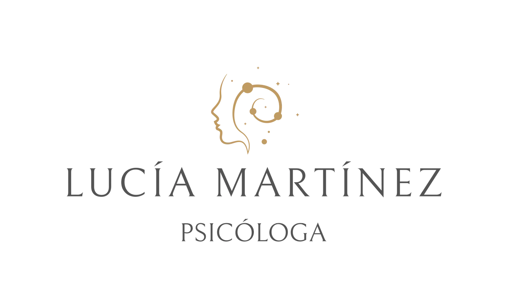

Psicología
Lucía Martínez
"Ahí está el verdadero poder: tener ojos y no tener miedo. La verdadera sanación es la aceptación y el verdadero proceso es la entrega". — Claudio Naranjo
SOBRE MI
¡Hola! Soy Lucía, apasionada por la mente humana y por ayudar a las personas a través del respeto, la aceptación, la escucha activa y la empatía.
Puedo ayudarte y acompañarte con tu malestar emocional, a indagar la procedencia de esas emociones y sentimientos; si sufres de ansiedad o estrés, a conseguir esa calma y paz que anhelas; si estás atravesando un proceso de duelo o si has vivenciado algún hecho traumático.

Construiremos juntos un espacio seguro donde sanar y crecer.
Licenciada en Psicología, especializada en Mindfulness, Psicología Positiva, Terapias de Tercera Generación y, más recientemente, en Terapia EMDR para el tratamiento de trauma.
Apasionada por la mente humana y por ayudar a las personas a través del respeto, la aceptación, la escucha activa y la empatía.
Lista para ayudarte y acompañarte con tu malestar emocional, a indagar la procedencia de esas emociones y sentimientos; si sufres de ansiedad o estrés, a conseguir esa calma y paz que anhelas; si estás atravesando un proceso de duelo o si has vivenciado algún hecho traumático.
Sin duda, dejando los títulos a un lado, el mayor aprendizaje que he obtenido ha sido a través mi experiencia como paciente, la cual considero un paso fundamental para poder así acompañar a otra persona en su proceso.
Me dedico a dar acompañamiento profesional y personalizado para ayudar a otros a mejorar su bienestar emocional y calidad de vida.
Trabajo contigo el autoconocimiento, la gestión de emociones y las relaciones personales.
Agenda una cita
Psicóloga
Mindfulness, Psicología Positiva, Terapias de Tercera Generación y EMDR. 600 05 02 72